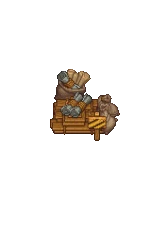

Buffet tent
| Buffet tent | |
|---|---|
 | |
Basic information
| |
Required Technology :
|
Talk with the inquisitor |
Rotatable :
|
False |
Location(s)
| |
| Witch Hill | |

This tent appears in the Inquisitor's quest. It comes complete with a storage tent, a market stall and four bar tables for the customers. It has a fixed place on Witch Hill and is not rotatable. It is only used during the witch burnings.
5 gold-star Burgers are used in each instance of the Inquisitor's Buffet Tent event.
Cost
| Icon | Materials Required | Energy | Notes |
|---|---|---|---|
| 5× Hemp rope 15× Wooden plank 20× Nails |
- |

Working the Tent
- First you have to advance the quest until you are able to build it.
- Build the tent, check table above for the costs.
- Stock it with 5×

Burger and 10×
A mug of beer. - On
 , visit the inquisitor to operate the tent and watch the cutscene. You will earn
, visit the inquisitor to operate the tent and watch the cutscene. You will earn  33 , 4×
33 , 4×
Faith, and the achievement "Not a hot dog". - Stock the tent and host a burning up to 3 more times (max 1 per week) to earn additional money and faith. This "timer" counts down whether or not you take part, until the tent becomes unusable from the 4th week onward. If you fully restocked the buffet before the Inquisitor arrives the 4th time, you can still tell him the tent is ready and get one last money and faith bonus, even after he tells you burnings are no longer permitted.
- Finally, the king forbids burnings and the tent has no use any more.
| ||||||||